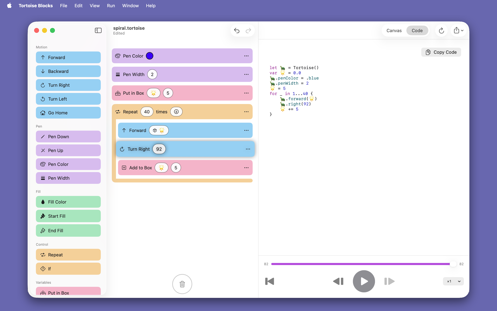
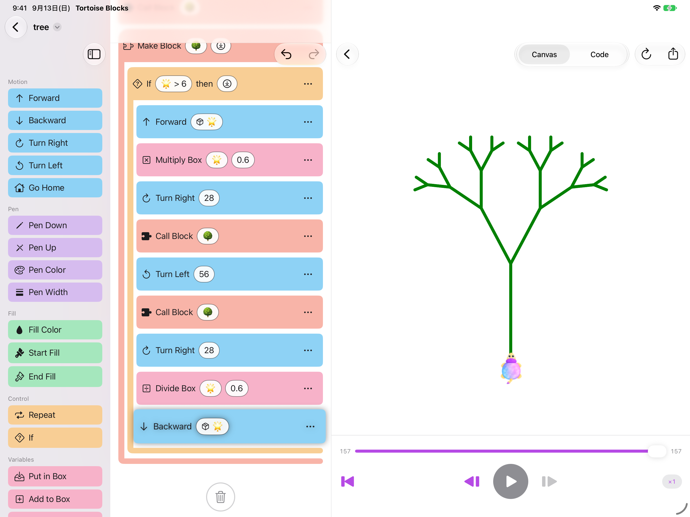
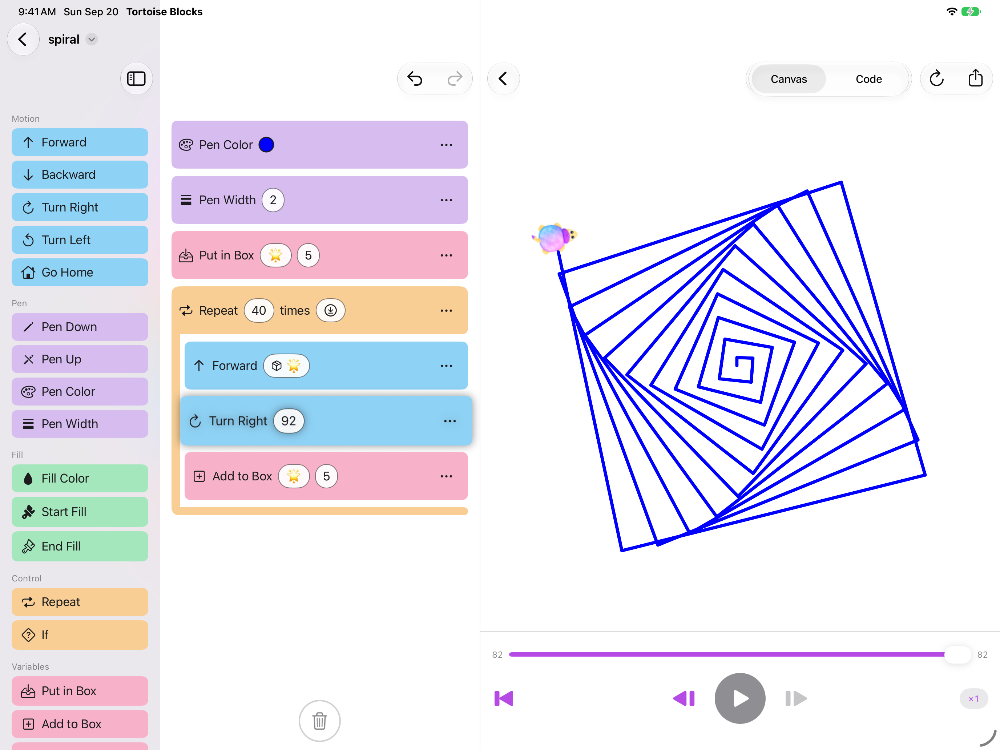
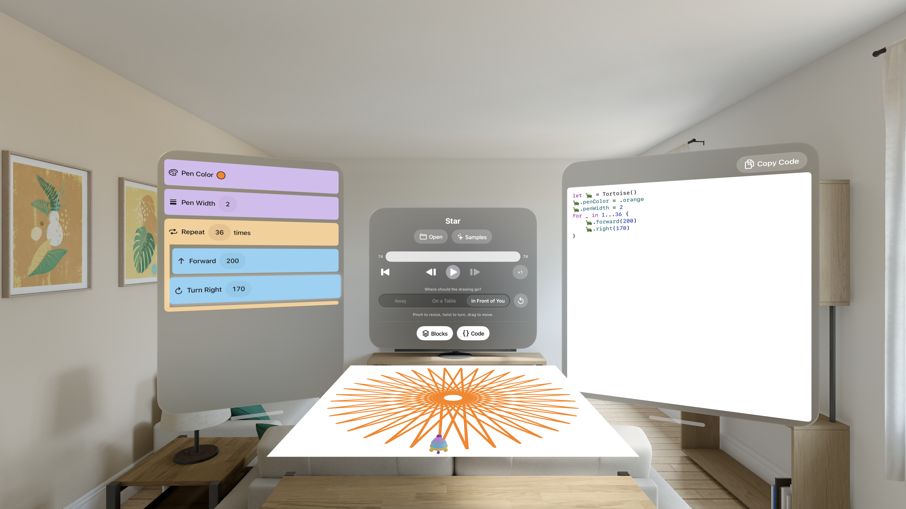

Blocks become Swift
Snap blocks together, and the pane beside them shows the same program as real, syntax-colored Swift.

Blocks you make yourself
Name a block 🌳, let it draw a branch, and let it call itself twice — a little shorter each time. Nine blocks on one screen, and thirty-one branches later there is a tree.

Watch it draw
Play, pause, step forward one command at a time, scrub back and forth, change the speed mid-run. The block being drawn stays lit, so it is never a mystery.

Apple Vision Pro
Built on iPad and Mac. Open one on Vision Pro and it lies on the table in front of you, at whatever size you like, with the tortoise walking the line as it appears.

For parents and teachers
Free, and open source under the MIT license